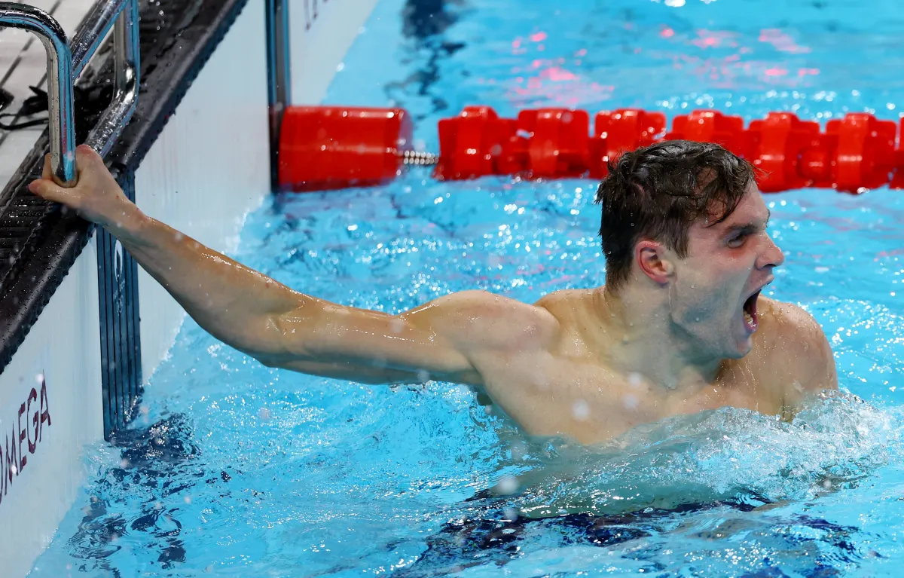

Pan Zhanle (China) - men’s swimming 100m freestyle - 46.40s
Previous record - Pan Zhanle (China) - Doha, 11 February 2024 - 46.80s
Read More on this
USA (Vernon Norwood, Shamier Little, Bryce Deadmon, Kaylyn Brown) - Athletics 4x400m mixed relay - 3:07.41s
Previous record - USA - Budapest, 19 August 2023 - 3:08.80s
Go somewhere

Bobby Finke (USA) - men’s swimming 1500m freestyle - 14:30.67s
Previous record - Sun Yang (China) - London, 4 August 2012 - 14:31.02s
Go somewhere